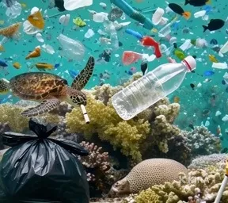

This image explores the concept of ocean pollution and its impact on marine ecosystems, particularly how plastic waste threatens sea life and coral reefs. The sea turtle swimming among floating plastic bottles, bags, and debris highlights the growing environmental crisis of human-generated waste entering the ocean. The contrast between the natural beauty of the coral reef and the overwhelming presence of trash emphasizes the disruption of fragile ecosystems. The issue being addressed is not only pollution itself but also the broader themes of human responsibility, sustainability, and environmental awareness.
To create this composition, I used digital editing techniques such as layer masking to seamlessly combine the underwater scene with multiple images of plastic waste. Blending modes and opacity adjustments helped integrate the debris naturally into the water environment, making the objects appear submerged rather than artificially placed. Color adjustments and blue-green overlays were applied to unify the image and maintain the underwater tone, while slight contrast enhancement was used to make the trash stand out against the coral. The source images were a combination of online stock photographs of marine life and plastic waste, selected and composited together to create a realistic yet symbolic representation of ocean pollution.